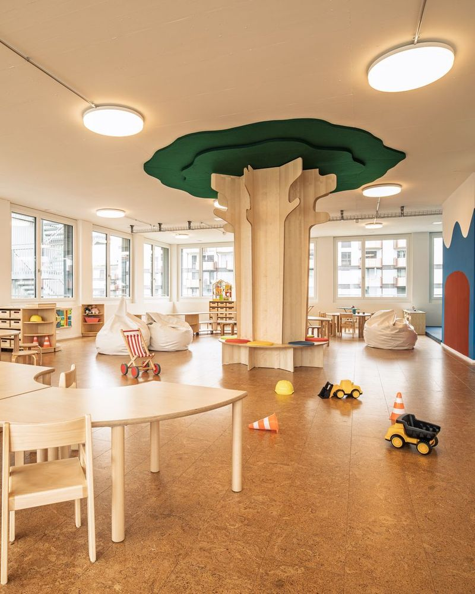

FDP Delegierter
Für alle,die etwasaufbauen.
Ich habe Firmen gegründet, eine Schule eröffnet und leiste Dienst als Hauptmann.
Ich weiss, wie Aufbauen geht.
Betriebe
Gründer der Lorien Group in Aarau. Ich berate Inhaber von Betrieben und baue mit Partnern weitere Firmen auf.
Eine Schule
Acton Academy Dübendorf, eröffnet im August 2026. Davor Bewilligungsverfahren in zwei Kantonen.

Dienst
Hauptmann im Bataillonsstab. Miliz seit 2018, neben Firma und Schule.
Wofür ich einstehe
Arbeit
Ich berate Inhaber von Betrieben. Wer eine Firma gründet, braucht weniger Bürokratie.
Bildung
Ich habe eine Schule gegründet. Ich kenne den Weg durch die Bewilligungen.
Sicherheit
Ich leiste Dienst neben Firma und Schule. So funktioniert Miliz.
Die nächsten Daten
- Parteitag FDP AargauStapferhaus Lenzburg, 19.00 Uhr
- Eidgenössische AbstimmungFünf Vorlagen. Mein Stimmzettel steht vorher hier.
- Generalversammlung FDP AarauAarau
- National- und StänderatswahlenGanze Schweiz
Redenwir.
Eine Einladung oder ein Thema, das liegen bleibt: Schreiben Sie mir. Ich antworte selbst.